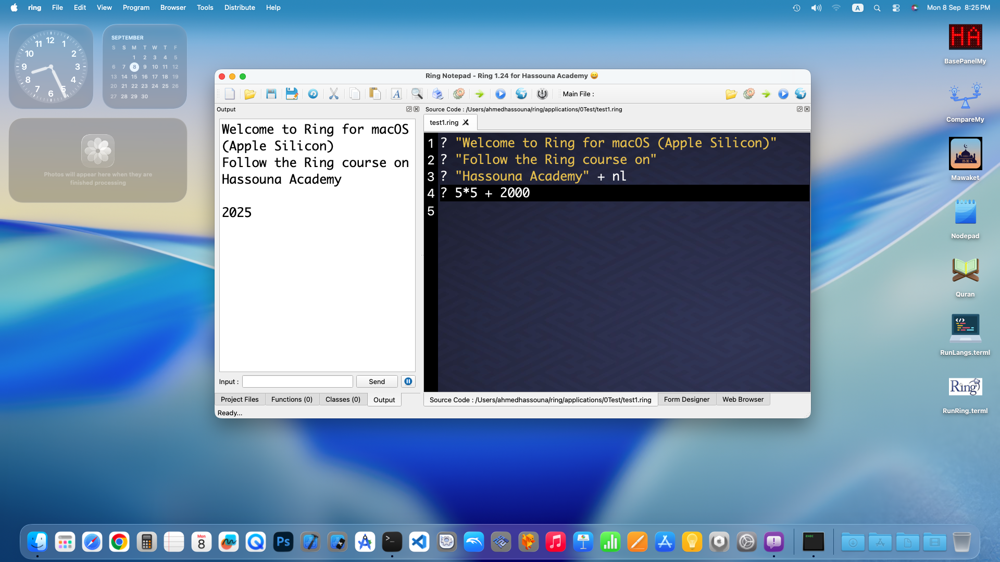
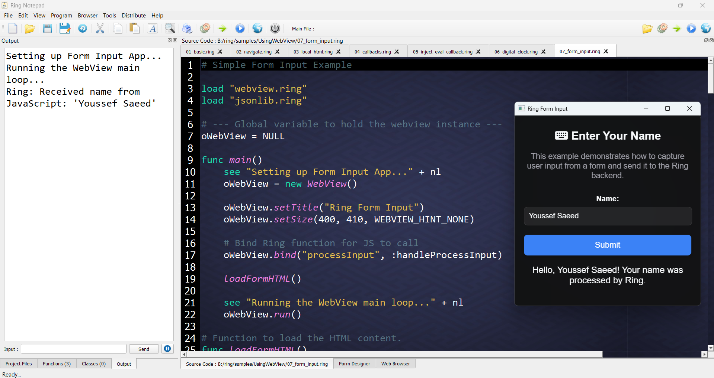

What is new in Ring 1.24
In this chapter we will learn about the changes and new features in Ring 1.24 release.
List of changes and new features
Ring 1.24 comes with the next features!
PhD Thesis (Ring and PWCT2)
Ring for macOS (Apple silicon)
RingPM GUI
RingFmt
More RingPM Packages
More Samples
Better Operator Overloading
Better StdLib
Better Functions
Better RingLibCurl
Better RingHTTPLib
Better Support for Threads
Better Documentation
More Improvements
PhD Thesis (Ring and PWCT2)
Title: Dual-Language General-Purpose Self-Hosted Visual Language and new Textual Programming Language for Applications
URL: https://arxiv.org/abs/2509.20426
PDF: https://arxiv.org/pdf/2509.20426
Presentation: https://ring-lang.github.io/ref/PhDThesisPresentation.pdf
Ring for macOS (Apple silicon)
Build scripts are revised to support both of macOS (Intel) and macOS (Apple silicon)
Tested using macOS 13 (Intel) and macOS 15 (Apple silicon)
RingPM GUI
A GUI tool for Ring Package Manager (RingPM)
We can run it from the Tools Menu in Ring Notepad or using RingPM
ringpm run ringpmgui
Features:
Package Installation: Install Ring packages by entering the package name
Package Management: View all installed packages in a table format
Package Operations: Run, update, and remove installed packages
Real-time Output: View command output and progress in real-time
User-friendly Interface: Clean and intuitive GUI design

RingFmt
RingFmt is a source code formatter and beautifier
Usage:
ringfmt filename.ring [Options]
Options:
-keywords:lower (-k:l): Convert all keywords to lowercase (default)
-keywords:upper (-k:u): Convert all keywords to UPPERCASE
-keywords:name (-k:n): Convert keywords to NameCase (e.g., Class, From)
-indentation:tabs (-i:t): Use tab characters for indentation (default)
-indentation:2 (-i:2): Use 2 spaces per indentation level
-indentation:4 (-i:4): Use 4 spaces per indentation level
-indentation:8 (-i:8): Use 8 spaces per indentation level
-output:print (-o:p): Print formatted output (default)
-output:write (-o:w): Overwrite the source file with formatted output
-output:none (-o:n): No output
More RingPM Packages
The following packages have been added to the RingPM registry.
YAML: A YAML parser for the Ring programming language
Ring-JWT: JWT library for the Ring programming language
Worm: Simple example about Map generation in Ring Game Engine for 2D Games
Dialog: Ring bindings for osdialog, a cross-platform library for native OS dialogs
TicTacToePlus: An implementation for the TicTacToe game (large board) using RingQt
SimpleJSON: Simple Ring extension for the Jansson JSON library
WebView: Create beautiful, cross-platform desktop apps using Ring and web technologies
Example:
ringpm install webview
The following screenshots are samples from the WebView package.

More Samples
The next samples are added:
samples/General/HTMLExtract
samples/General/ClassicArrays
samples/UsingLibCurl/DiscordBot
samples/UsingLibCurl/test12.ring
samples/UsingLibCurl/test13.ring
samples/UsingJSONLib/test12.ring
samples/UsingJSONLib/test13.ring
samples/UsingHTTPLib/test20.ring
samples/UsingHTTPLib/test21.ring
samples/UsingHTTPLib/test22.ring
samples/UsingLibSDL/test11.ring
samples/UsingLibSDL/test12.ring
samples/UsingLibSDL/test13.ring
samples/UsingLibSDL/test14.ring
samples/UsingLibSDL/test15.ring
samples/UsingLibSDL/test16.ring
samples/UsingLibSDL/test17.ring
samples/Language/SyntaxFiles
samples/Language/ClassMethods/genfunctopassmethod.ring
samples/Language/ClassMethods/genfunctopassmethod2.ring
samples/Language/ChangeSyntax/newkeywordsinsideclasses.ring
samples/General/SmallExamples/TicTacToePlus/tictactoeplus.ring
samples/UsingFormDesigner/verticalprogressbar
The next samples are improved
samples/UsingThreads/RingThreads
samples/UsingRayLib/more/ex5_wavingcubes_threads.ring
The following screenshot shows one of the animation samples (Desktop)

The following screenshot shows the same animation sample on Android

Better Operator Overloading
In this release, we have extended operator overloading support to include compound assignment operators such as +=, -=, *=, /=, %=, etc.
Example:
p1 = new point { x = 10 y = 20}
p1 += 100
? p1
class point
x y
func operator cOp, vValue
if cOp = "+=" and isNumber(vValue)
x += vValue
y += vValue
ok
Output:
x: 110
y: 120
Note
Increment (++) and decrement (--) operators are supported as well
Better StdLib
isAppCompiled() function: Better implemetation
The next functions are added to StdLib:
StringToBase32(cString) ---> cBase32
Base32ToString(cBase32) ---> cString
Example:
load "stdlibcore.ring"
cStr = "Hello World"
? StringToBase32(cStr)
cBase32 = "JBSWY3DPEBLW64TMMQ======"
? Base32ToString(cBase32)
Output:
JBSWY3DPEBLW64TMMQ======
Hello World
Better Functions
ring_state_filetokens(): Support getting tokens for scanner commands (optional)
ring_state_stringtokens(): Support getting tokens for scanner commands (optional)
ring_state_stringtokens(): Better performance
Space() function: Don’t accept values over UINT_MAX
List() function: Don’t accept values over UINT_MAX
List() function: Don’t use blocks for small 1D lists
Read() function: Reduce memory usage (improve the performance)
FRead() function: Reduce memory usage (improve the performance)
FGets() function: Reduce memory usage (improve the performance)
SubStr() function: Reduce memory usage (improve the performance)
Reverse() function: Reduce memory usage (improve the performance)
Shutdown() function: Don’t terminate Ring Main State when used from Ring Sub State
Many functions are updated to use RING_API_NEWLIST and RING_API_RETLISTBYREF
Better RingLibCurl
The next functions are added to the extension
* void curl_global_cleanup(void)
* CURLM *curl_multi_init(void)
* CURLMcode curl_multi_cleanup(CURLM *multi_handle)
* CURLMcode curl_multi_add_handle(CURLM *multi_handle, CURL *curl_handle)
* CURLMcode curl_multi_remove_handle(CURLM *multi_handle, CURL *curl_handle)
* List* curl_multi_perform(CURLM *multi_handle)
* List* curl_multi_wait(CURLM* multi_handle, double timeout_ms)
* List* curl_multi_info_read(CURLM *multi_handle)
* List* curl_ws_send(CURL *curl, const char *buffer, double fragsize, int flags)
* List* curl_ws_recv(CURL *curl, double buflen)
* List* curl_ws_meta(CURL *curl)
Better RingHTTPLib
The next changes and improvements are done to the extension
* The file httplib.h is updated (Using 0.23.1)
* Added body() method to HTTPLib_Request class
* Added setStatus() and getStatus() to Server class
* Support more server http methods: PUT, PATCH, DELETE and OPTIONS
Better Support for Threads
Ring VM: Better functions for threads support
Ring VM: Thread safe reference counting for Ring Lists
Ring VM: Thread safe reference counting for List items that wraps C pointers
Ring Compiler/VM: ring_list_getitem() - Avoid cache when using threads
Ring Compiler/VM: ring_list_setcache_gc() - Avoid cache when using threads
Note
When using threads, all Ring Lists bypass the internal dynamic cache, ensuring safe concurrent reads. Accessing a list for reading does not trigger implicit writes to the cache, making it thread-safe by design.
Better Documentation
The next chapters are added:
Deploying Ring Web Applications using Docker
Deploying Ring Web Applications to Cloud Platforms
Deploying Ring Web Applications to Shared Hosting
The next chapters are improved
Using Ring Notepad
Using Ring Libuv
Using Ring LibCurl
Embedding Ring in Ring
Building Games For Android
More Improvements
Better scripts for building Ring (32bit) and Ring (64bit) on Windows
FlappyBird3000: Use the same FPS for Desktop/Android
Ring for macOS: Execute reviselibsformacos.sh when running bin/install.sh
File: marketing/presentation/Ring.pptx - English revision
File: ring/extensions - document.bat - Using ring/documents folder
File: language/build/buildzig.bat - Updated and tested using Zig 0.16dev
File: extensions/codegen/gendoc.ring - Improved function documentation generation
RingNotepad: New window icon
FindInFiles: Using setSelectionMode() to enable single-row selection
FindInFiles: Using lightguilib.ring instead of guilib.ring
FindInFiles: Show the window at the screen centre
GameEngine: Clear error message if image/font/sound file doesn’t exist
RingJSONLib: Handle a case when the input is an array only
RingLibCurl: ring_curl_simple_getinfo_1() function - Remove unnecessary free()
RingLibSDL: Enable building the extension using recent MSVC compiler
RingLibSDL: Better support for Android (Using recent development tools)
RingLibuv: Revise the samples to use destroy_sockaddr_in() function
Ring Tests: Add/Use: nIgnoreCount
Ring PM: Tests are revised and improved
Ring PM: Better format for output messages
Ring PM: Error message when the package contains a file that doesn’t exist
Ring PM: Disable colors usage in output when the CUILIB_COLORS environment variable is 0
Ring VM: ring_objfile_readfromsource() - Better implementation
Ring VM: Support handling stack overflow error using Try/Catch
Ring VM: Clean memory after runtime errors before returning to the operating system
Ring VM: Better format when printing the Byte Code
Ring VM: ring_vm_afterscopeidoverflow() - Better Code
Ring VM: ring_vm_showerrormessage() - Better error message when using a C function
Ring Compiler: Spaces inside multi-character operators (like !=, <=, >=) are not allowed
Ring Compiler/VM: ring_list_setcache() is renamed to ring_list_setcache_gc()
Ring Compiler/VM: ring_list_insertitem_gc() implementation - Avoid using ring_list_setcache_gc()
Ring Compiler/VM: ring_list_getitem() - Avoid cache for small lists (Up to 6 items)
Ring Compiler/VM: Check size overflow for Ring Strings, Lists and HashTables
Ring Compiler/VM: Check reference count overflow for Ring Lists and List Items
Ring Compiler/VM: String functions - Get index as (unsigned int) instead of (int)
Ring Compiler/VM: ring_string_set2_gc() implementation - Delete large buffers for empty strings
Ring Compiler/VM: ring_list_sortstr_gc() implementation - Reduce memory usage
Ring Compiler/VM: ring_hashtable_hashkey_gc() implementation - Better Performance